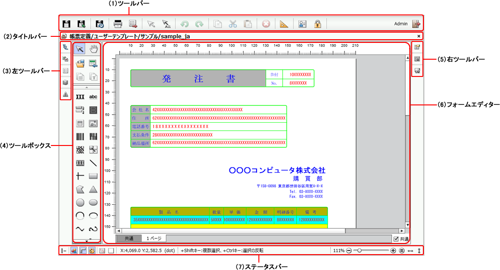
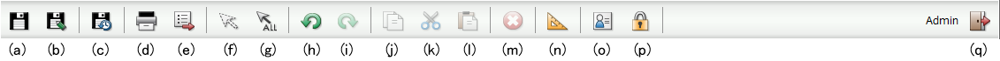
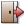
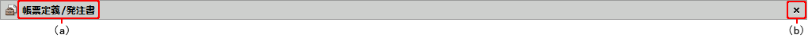
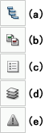
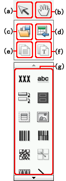
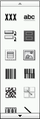
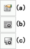
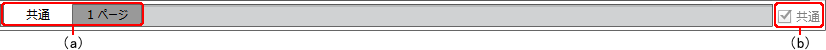
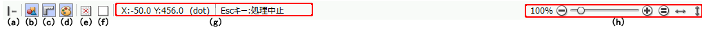

4.1. フォームデザイナーの画面構成と操作
帳票の設計は、フォームデザイナーで行います。下図に、フォームデザイナーの画面を示します。ここでは7つの区画に大別して、概要を説明します。

（1）ツールバー
帳票定義の保存、テスト印刷、アイテムの選択やコピーのほか、アイテムの既定値の設定やユーザープロファイル設定などを行います。

項目 | 説明 |
|---|---|
（a）帳票定義の保存 | 編集中の帳票定義を上書き保存します。 Ctrl+Shift+Sキーを押すことで同様の操作が可能です。 |
（b）名前を付けて帳票定義を保存 | 編集中の帳票定義を別の帳票定義として保存します。 詳細は、「帳票定義を保存する」の「名前を付けて保存する」を参照してください。 |
（c）クライアントバックアップファイルとして保存 | 編集中の帳票定義をバックアップとしてクライアントマシンに保存します。 詳細は、「帳票定義を保存する」の「クライアントバックアップファイルとして保存する」を参照してください。 |
（d）印刷 | テスト印刷します。 詳細は、「テスト印刷の操作」を参照してください。 |
（e）アイテム一覧の出力 | アイテムの設定内容をCSVファイルに保存します。 詳細は、「アイテムを一括設定する」の「プロパティの設定内容をCSVファイルに保存する」を参照してください。 |
（f）選択解除 | アイテムが選択されている状態を解除します。 |
（g）すべて選択 | フォームエディター上にあるすべてのアイテムを選択します。 Ctrl+Aキーを押すことで同様の操作が可能です。 |
（h）元に戻す | 実行した操作を、さかのぼって取り消します。 Ctrl+Zキーを押すことで同様の操作が可能です。 |
（i）やり直し | 取り消した操作を再実行します。 Ctrl+Yキーを押すことで同様の操作が可能です。 |
（j）選択アイテムのコピー | 選択中のアイテムをクリップボードにコピーします。 Ctrl+Cキーを押すことで同様の操作が可能です。 |
（k）選択アイテムの切り取り | 選択中のアイテムを切り取り、クリップボードにコピーします。 Ctrl+Xキーを押すことで同様の操作が可能です。 |
（l）アイテムの貼り付け | クリップボードにコピーされているアイテムを貼り付けます。 Ctrl+Vキーを押すことで同様の操作が可能です。 |
（m）削除 | 選択中のアイテムを削除します。 Delキーを押すことで同様の操作が可能です。 参考サブフォーム、レコード、連写のいずれかを削除する場合、階層下にアイテムが存在するときは、そのアイテムも削除されます。 |
（n） | アイテムの既定値を設定します。 詳細は、「アイテムの既定値を設定する」を参照してください。 |
（o）ユーザープロファイル設定 | ログインユーザーの表示言語や作業環境を設定します。 詳細は、「ユーザープロファイルの設定」を参照してください。 |
（p） | ログインユーザーのパスワードを変更します。 詳細は、「パスワードの変更」を参照してください。 |
（q）  | SVF Web Designerの使用を終了します。 |


（2） タイトルバー
タイトルバーには、編集中の帳票定義のタイトルが表示されます。また、［帳票定義を閉じる］ボタンも配置されています。

項目 | 説明 |
|---|---|
（a）タイトル | フォームデザイナーで設計中の帳票定義のパスを表示します。 書式: ［ディレクトリ名］/［帳票定義名］ |
（b）帳票定義を閉じる | 設計中の帳票定義を閉じます。 設計中の帳票定義が保存されていない場合、確認メッセージが表示されます。 帳票定義を閉じると、エクスプローラーの画面が表示されます。 |
（3）左ツールバー
左ツールバーには次のボタンが用意されており、各ボタンをクリックすると、開閉可能なウィンドウが表示されます。

項目 | 説明 | ||||||
|---|---|---|---|---|---|---|---|
（a）参照設定 | ［参照設定］ウィンドウが表示されます。 詳細は、「各種ファイルの設定」の「［参照設定］ウィンドウ」を参照してください。 | ||||||
（b）フォーム比較 | ［フォーム比較］ウィンドウが表示されます。 編集中の設計フォームと、変更履歴から指定したフォームを重ねて表示することで、フォームを比較します。 詳細は、「フォームエディター上に変更履歴から指定したフォームを表示する」を参照してください。 | ||||||
（c）アイテム | ［アイテム］ウィンドウが表示されます。 フォームエディターに配置されているアイテムの名前や各アイテムの親子関係が表示されます。 詳細は、「アイテムの基本的な操作方法」の「［アイテム］ウィンドウ」を参照してください。 | ||||||
（d）レイヤー | ［レイヤー］ウィンドウが表示されます。 詳細は、「アイテムを重ねて配置する（［レイヤー］ウィンドウの操作）」の「［レイヤー］ウィンドウ」を参照してください。 | ||||||
（e） | ［エラー、警告一覧］ウィンドウが表示されます。 詳細は、「帳票定義内のエラー、警告一覧を確認する」を参照してください。 参考様式内にエラー、警告がある場合、［エラー、警告一覧］ボタンの色が変わります。
|

（4）ツールボックス
各種アイテムと、アイテムを操作するための機能がまとめられています。

項目 | 説明 |
|---|---|
（a）アイテム選択モード | マウスカーソルがになり、クリックしたアイテムが選択状態となります。 詳細は、「アイテムを選択する」を参照してください。 |
（b）ハンドスクロール | マウスカーソルがになり、フォームエディター上でマウスをドラッグすることで、画面をスクロールできます。 フォームエディターの画面は、［ハンドスクロール］かスクロールバーを使うことでスクロールできます。 |
（c）合成アイテムの作成 | ［合成アイテムの選択］ダイアログが表示され、登録されている合成アイテムを呼び出します。 詳細は、「アイテムを登録して再利用する（合成アイテム）」の「合成アイテムを配置する」を参照してください。 |
（d）帳票のイメージ読み込み | 帳票の判型になる画像ファイルを帳票イメージ（下絵）として読み込みます。 詳細は、「帳票イメージを読み込み、罫線と文字を自動で作成する」を参照してください。 |
（e）帳票イメージから罫線を読み込む | ［帳票のイメージ読み込み］で読み込んだ帳票イメージ（下絵）の線分を認識し、罫線として自動で作成します。 詳細は、「帳票イメージを読み込み、罫線と文字を自動で作成する」の「帳票イメージから罫線を自動作成する」を参照してください。 |
（f）帳票イメージから文字を読み込む | ［帳票のイメージ読み込み］で読み込んだ帳票イメージ（下絵）の文字を認識し、固定文字として自動で作成します。 詳細は、「帳票イメージを読み込み、罫線と文字を自動で作成する」の「帳票イメージから固定文字を自動作成する」を参照してください。 |
（g）アイテム、チャート、テキストフレーム  | アイテム、チャート、およびテキストフレームを作成します。 アイテムについては「アイテムの作成」および「アイテムの作成（図形）」を参照してください。 チャートについては「アイテムの作成（チャート）」を参照してください。 テキストフレームについては「アイテムの作成（テキストフレーム）」を参照してください。 |
（5）右ツールバー
右ツールバーには次のボタンが用意されており、各ボタンをクリックすると、開閉可能なウィンドウが表示されます。

項目 | 説明 |
|---|---|
（a）プロパティ | プロパティエディターが表示されます。 フォームエディター上で選択中のアイテムのプロパティを設定します。 プロパティエディターの上部には、選択中のアイテムのモードが表示されます。選択しているアイテムによって、表示されるプロパティの項目が異なります。 用紙のプロパティについては、「用紙の書式を設定する」を参照してください。 アイテムのプロパティについては、「アイテムの作成」、「アイテムの作成（図形）」、「アイテムの作成（チャート）」、および「アイテムの作成（テキストフレーム）」を参照してください。 |
（b）グリッドの設定 | ［グリッドの設定］ウィンドウが表示されます。 詳細は、「レイアウトの補助機能を使用する」の「グリッドの設定を行う」を参照してください。 |
（c）表示設定 | ［表示設定］ウィンドウが表示されます。 詳細は、「レイアウトの補助機能を使用する」の「表示設定」を参照してください。 |
（6）フォームエディター
アイテムを配置し、帳票を設計するエリアです。

項目 | 説明 |
|---|---|
（a）ページタブ | 用紙のプロパティで設定されている［綴り枚数］の値に従って、ページを示すタブが表示されます。 ［共通］ページには、すべてのページに共通のアイテムを配置します。［共通］以外のページには、［共通］ページで作成したアイテムに加え、各ページ固有のアイテムを配置します。 詳細は、「編集できるアイテムをページごとに設定する」を参照してください。 |
（b）共通 | 「ページタブ」で、［共通］以外のページを選択している場合に操作が可能です。 ［共通］ページに配置されているアイテムの表示/非表示を切り換えます。 |
（7）ステータスバー
レイアウトの補助機能や、フォームエディターの表示倍率を変更する機能がまとめられています。

項目 | 説明 |
|---|---|
（a）接点モード | 矩形の中に罫線を引く際やサブフォーム内にレコードを配置する際に、［接点モード］をオンにすると、罫線は自動的に枠の中に収まるように設定され、レコードは自動的にサブフォームの幅に合わせて調整されます。 詳細は、「レイアウトの補助機能を使用する」の「接点モード」を参照してください。 |
（b）ツールボックスの表示 | ツールボックスの表示/非表示を設定します。 ボタンをクリックするたびに、ツールボックスの表示/非表示が切り換わります。 |
（c）ルーラーの表示 | フォームエディターの上端と左端に表示されるルーラーの表示/非表示を切り換えます。 詳細は、「レイアウトの補助機能を使用する」の「表示設定」を参照してください。 |
（d）設計色で表示 | フォームエディターに表示されるアイテムの表示色を設定します。 詳細は、「設計色と印刷色」を参照してください。 |
（e）アイテムの配置位置 | アイテムを配置する際のグリッドの精度を設定します。 詳細は、「レイアウトの補助機能を使用する」の「グリッド」を参照してください。 |
（f）グリッドの表示 | アイテムを配置する際のグリッド表示を設定します。 詳細は、「レイアウトの補助機能を使用する」の「グリッド」を参照してください。 |
（g）ステータスバー | フォームエディター上でのマウスカーソルの位置と各マウス操作時のキー操作に関する説明が表示されます。 |
（h）表示倍率を変更するスライダー、ボタン | フォームエディターの表示倍率を変更します。 詳細は、「レイアウトの補助機能を使用する」の「表示倍率を変更する」を参照してください。 |